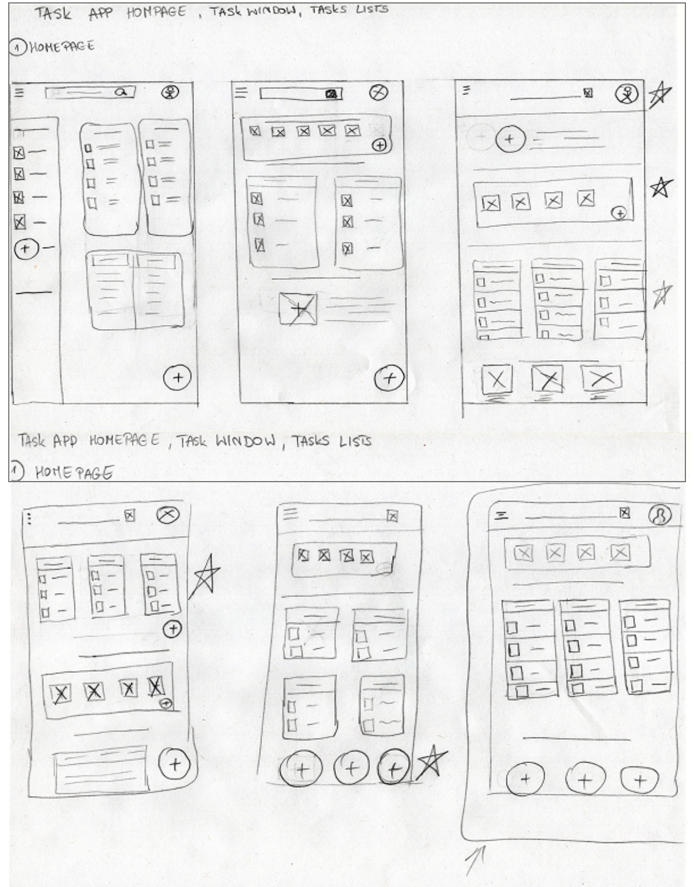
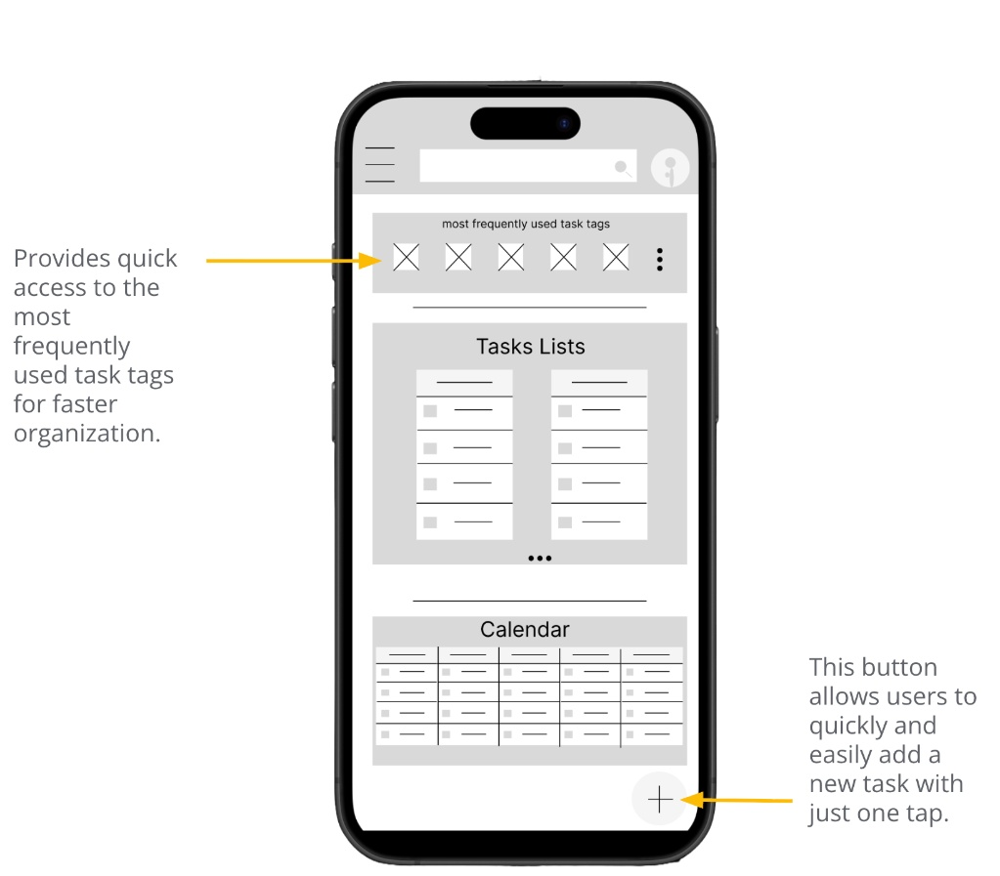

TaskApp: Task Organization, Information Architecture & Interaction Design
Designing an intuitive cross-platform task organization system to reduce cognitive friction for busy professionals balancing dual work and household responsibilities.
1. Problem & User Research
Exploratory research around busy professionals highlighted common friction with cluttered task interfaces, difficult category organization, and slow task capture. The research suggested that multi-step navigation can make task creation, tagging, and retrieval feel unnecessarily slow when users are switching between work and household responsibilities.
Lukas needs rapid task entry without navigating complex hierarchical menus. His primary goals include hands-free task capture during commutes, instant category filtering between work and family items, and shared household list coordination.
2. Exploratory Paper Wireframes & Ideation
Before moving into digital design tools, I sketched multiple layout variations to explore how information density, category filtering, and action buttons could be organized for mobile ergonomics:

- Navigation Exploration: Compared sidebar-based navigation with top-level search and tag access to explore which structure kept frequent actions most immediately accessible.
- Category & Card Density: Explored horizontal category pills combined with multi-column task containers to provide glanceable overview without deep scrolling.
- Thumb-Zone Optimization: Selected the bottom-aligned action cluster and top category bar to allow comfortable one-thumb task filtering and instant entry.
3. Digital Low-Fidelity Wireframing & Layout Ergonomics
Translating the paper sketches into digital wireframes in Figma, I refined the spatial hierarchy to support rapid categorization and one-tap task creation:

- Frequent Tag Carousel: Placed at the top of the interface, giving users instant one-tap access to frequently used tags (e.g., Work, Household, Urgent) to streamline organization.
- Structured Multi-Card Feed: Segregated task lists and calendar views into distinct visual blocks to maintain scannability.
- Thumb-Zone Action Trigger: Anchored the primary "+" creation button in the bottom-right corner for effortless single-handed reach on mobile devices.
4. Information Architecture & Screen Flow
I mapped the end-to-end screen architecture in Figma, connecting task creation, date selection, reminders, categories, and filtering into a consistent user flow. The goal was to establish logical navigation hierarchies and reduce navigation dead-ends during creation workflows.

5. Usability Testing & Iteration
I conducted two rounds of usability testing with three participants per round (six participants total), using structured notes to identify recurring friction and guide prototype iteration:
- Round 1 Findings: Participants requested voice-based task capture and shared folders/lists for household coordination.
- Round 2 Findings: Participants experienced difficulty locating folder selection, understanding tags, and filtering tasks by tag; onboarding guidance was also suggested.
- Design Iteration: I made folder and category selection more explicit within the task-creation flow and clarified filtering controls to reduce navigation friction.
6. From Research to Design Decisions
How specific user pain points directly informed the interface architecture:
Allows users to instantly isolate Work vs. Household tasks with a single top-level tap.
Positions a high-contrast action trigger in the natural mobile thumb zone for one-tap entry.
Enables quick voice input for capturing tasks hands-free during commutes.
Embeds folder selection directly into the creation flow to prevent orphaned tasks.
7. Project Context & Constraints
Key takeaways from the project:
- Prioritizing speed of entry over aesthetic complexity is essential for high-frequency utility tools.
- Structuring clear information architecture early prevents cognitive friction during multi-step mobile interactions.